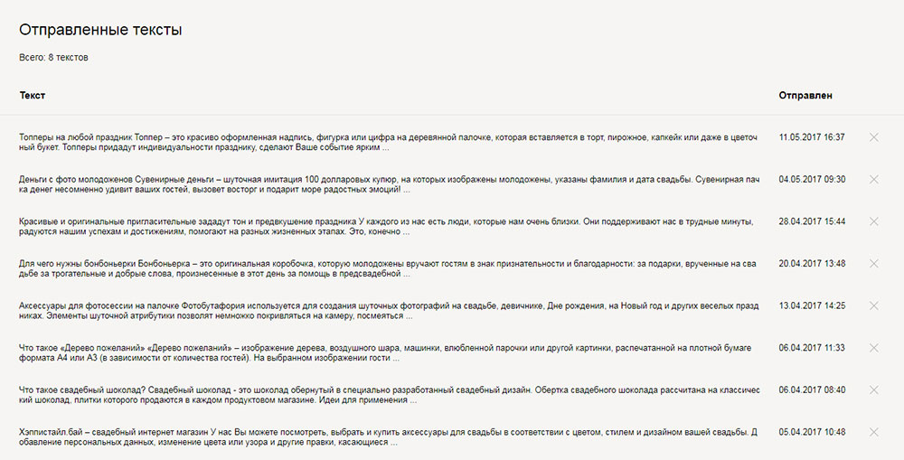

Для меня SEO оптимизация - это удовлетворение запросов поисковых роботов и пользователей Интернета.
Я с одной стороны опытный пользователь Интерната. Я ежедневно просматриваю десятки веб-страниц и знаю, что хочу увидеть на сайте, когда ввожу поисковый запрос. Я могу предугадать на основании своего опыта, что хочет пользователь.
А с другой стороны я инженер, имеющий опыт в создании сайтов и их продвижении и я знаю подноготную сайта: из чего он состоит, куда он отправляет запросы и каким образом дает информацию пользователю. Я могу предугадать, что должно понравиться поисковому роботу.
Мне нравиться изучать детали, внедрять их на практике, анализировать информацию и на выходе получать результат.
Но я предполагаю, что я вижу и понимаю только вершину айсберга, а хотелось бы больше и лучше. Мне нужна помощь профессионалов, их опыт и взгляд со стороны, их разъяснение, что хорошо, а что плохо. Вот для этого мне и нужна стажировка в отделе поискового маркетинга.
Тема веб-серфинга и Интернета в общем вошла в мою жизнь с поступлением в БГУИР в 2006 году. Там я узнал основы программирования, научился разбирать и собирать компьютеры, устанавливать программы и даже паять. Мне это очень нравиться и поэтому вся моя жизнь так или иначе связана с информационными технологиями.
Есть опыт в продвижении магазина свадебных аксессуаров
Все категории товаров имеют уникальный контент, который я писал сам и проверял вот здесь https://text.ru/
